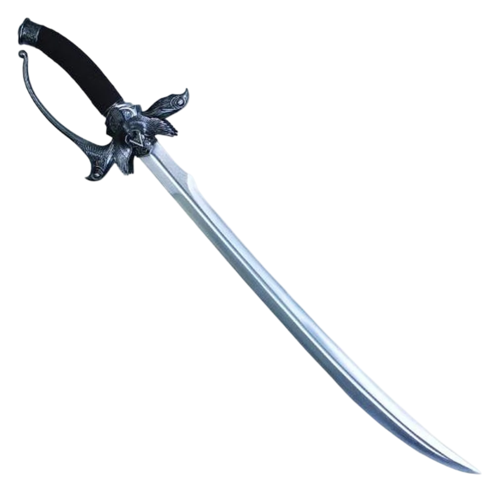

Edward Thatch (c. 1680 – 1718), also known by the alias Blackbeard, was an infamous English pirate captain who sailed the West Indies and the eastern seaboard of the American colonies during the early 18th century, aboard the ship Queen Anne's Revenge, being one of the most respected crime lords of the time.
In 2013, his genetic memories were used as an Animi Avatar under the title of Blackbeard by the entertainment branch of the Templar company Abstergo Industries, to influence the general public via the Animus game console.
A cutlass is a short, broad sabre or slashing sword, with a straight or slightly curved blade sharpened on the cutting edge, and a hilt often featuring a solid cupped or basket-shaped guard. It was a common naval weapon during the early Age of Sail.
